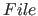
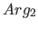

Next: Data Types Up: picat_guide Previous: Contents Contents
picatOnce the interpreter is started, users can type a command line after the prompt
Picat>. The help command shows the usages of commands, and the halt command terminates the Picat interpreter. Users can also use the picat command to run a program directly as follows:
picat where (with or without the extension .pi) is the main file name of the program. The program must define a predicate named main/0 or main/1. If the command line contains arguments after the file name, then main/1 is executed. Otherwise, if the file name is not followed by any arguments, then main/0 is executed. When main/1 executed, all of the arguments after the file name are passed to the predicate as a list of strings.